| Het wegkwijnende straaljagermotor - voorverhittings - voertuig. Een fantastisch apparaat,
jammer dat de originele uitrusting van de bus niet meer aanwezig is. Alleen een aantal rare
objecten doen nog aan de tijd herrinderen dat deze bus dienst deed bij de Duitse luchtmacht.
Volgens de overlevering zijn er 100 van deze bussen geweest. Een medewerker van het museum heeft
er vorig jaar nog één gesignaleerd in een Zuid-Duitse stad. Op dit moment fungeert
de bestelbus als brandhout-opslag voor de barbeque. nog een paar foto's zijn hier te zien. |
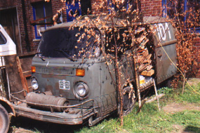 |
| 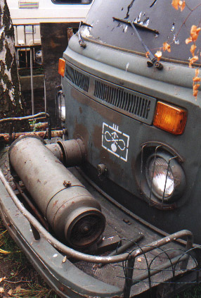 | 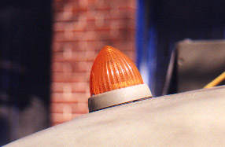 |
| 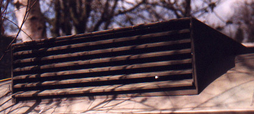 |
| Jens repareerd de remlichten van zijn 69er onder begeleiding van twee deskundigen... | 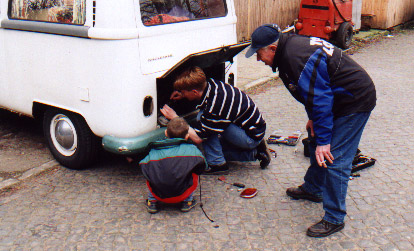 |
| 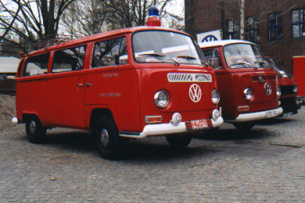 Duitse Brandweerwagens |
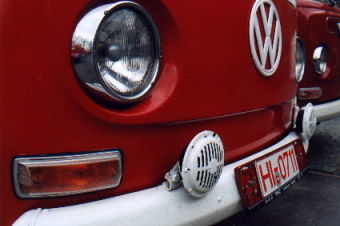 Een close-up van de sirenes |
| 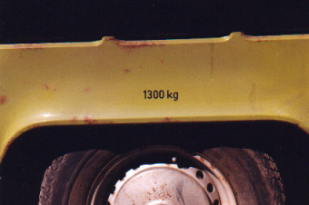 M-code 65 (achter) |
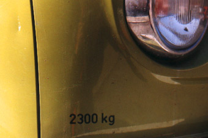 M-code 65 (voor) |
| 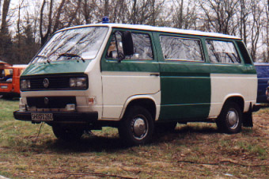 Ex-Polizei T3 |
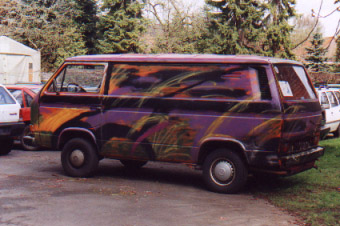 gespot in de omgeving: Psychedelische T3 |
| 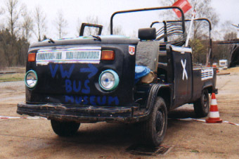 Nogmaals de 'transporter' van het busmuseum... |
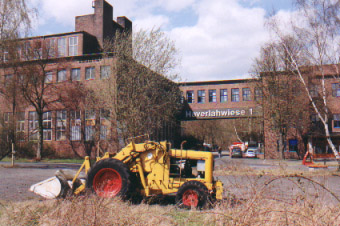 Het complex 'Haverlahwiese 1' |
|
Last update: April 29th, 2000 Copyright © 1997 Vincent Molenaar molenari@hotmail.com |
DISCLAIMER |
Vincenzo's Volkswagen Vans
|